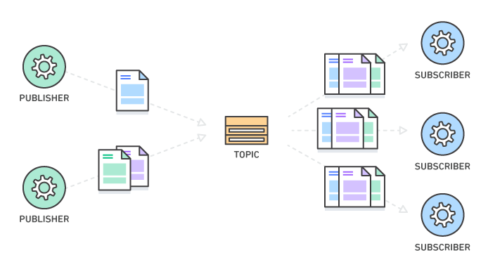
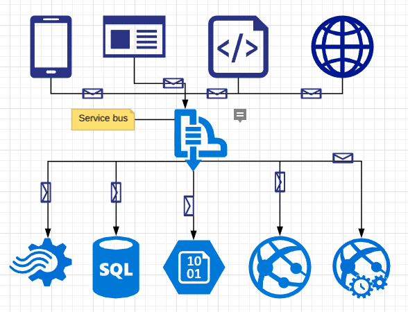

Introduction to Message Queue
Message queue is a form of asynchronous service-to-service communication mostly used in microservices architectures. Messages are stored on the queue until they are processed and deleted. Each message is processed only once, by a single consumer or by a consumer group. Message queues can be used to decouple heavyweight processing, to buffer or batch work, and to smooth spiky workloads.

Figure: Message Queue
In modern cloud architecture, applications are decoupled into smaller, independent building blocks that are easier to develop, deploy and maintain. Message queues provide communication and coordination for these distributed applications. Message queues can significantly simplify coding of decoupled applications, while improving performance, reliability and scalability.
Message queues allow different parts of a system to communicate and process operations asynchronously. A message queue provides a lightweight buffer which temporarily stores messages, and endpoints that allow software components to connect to the queue in order to send and receive messages. The messages are usually small, and can be things like requests, replies, error messages, or just plain information. To send a message, a component called a producer adds a message to the queue. The message is stored on the queue until another component called a consumer retrieves the message and does something with it.
Publish/subscribe messaging, or pub/sub messaging, is a form of asynchronous service-to-service communication used in serverless and microservices architectures. In a pub/sub model, any message published to a topic is immediately received by all of the subscribers to the topic. Pub/sub messaging can be used to enable event-driven architectures, or to decouple applications in order to increase performance, reliability and scalability.

Figure: Message Queue Pub-sub
Some widely used message queues nowadays:
What is Azure Service Bus
Microsoft Azure Service Bus is a fully managed enterprise integration message broker. Service Bus can decouple applications and services. Service Bus offers a reliable and secure platform for asynchronous transfer of data and state.
Data is transferred between different applications and services using messages. A message is in binary format and can contain JSON, XML, or just text.
Some common messaging scenarios are:
- Messaging. Transfer business data, such as sales or purchase orders, journals, or inventory movements.
- Decouple applications. Improve reliability and scalability of applications and services. Client and service don’t have to be online at the same time.
- Topics and subscriptions. Enable 1:n relationships between publishers and subscribers.
- Message sessions. Implement workflows that require message ordering or message deferral.

Figure: Azure Service Bus
Key Concepts
Some key concepts about Service Bus.
Namespace
A namespace is a Container for all messaging components. Multiple queues and topics can be in a single namespace, and namespaces often serve as application containers.
Queues
Messages are sent to and received from queues. Queues store messages until the receiving application is available to receive and process them.
Messages in queues are ordered and timestamped on arrival. Once accepted, the message is held safely in redundant storage. Messages are delivered in pull mode, only delivering messages when requested.

Figure: Azure Service Bus Queues
Topics
Service Bus can also use topics to send and receive messages. While a queue is often used for point-to-point communication, topics are useful in publish/subscribe scenarios.
Topics can have multiple, independent subscriptions. A subscriber to a topic can receive a copy of each message sent to that topic. Subscriptions are named entities. Subscriptions persist, but can expire or autodelete.
You may not want individual subscriptions to receive all messages sent to a topic. If so, you can use rules and filters to define conditions that trigger optional actions. You can filter specified messages and set or modify message properties. For more information, see Topic filters and actions.

Figure: Azure Service Bus Topic
Advanced Features
Microsoft Azure Service Bus provides following advanced features.
Transportation Protocols
Service Bus supports standard AMQP 1.0 and HTTP/REST protocols.
- Advanced Message Queuing Protocol (AMQP)
- Service Bus Messaging Protocol (SBMP)
- Hypertext Transfer Protocol (HTTP)
Note: The SBMP is only available for .NET Framework.
Client Libraries
Service Bus supports multiple client libraries such as .NET, Java, and JMS.
- .NET
- Java
- Python
- Node.js
- PHP
- Ruby
- Go
- PowerShell
- REST
- …
Message Sessions
Microsoft Azure Service Bus sessions enable joint and ordered handling of unbounded sequences of related messages. Sessions can be used in first in, first out (FIFO) and request-response patterns.
Sessions provide concurrent de-multiplexing of interleaved message streams while preserving and guaranteeing ordered delivery.

Figure: Azure Service Bus Sessions
Dead-letter Queue (DLQ)
Service Bus supports a dead-letter queue (DLQ). A DLQ holds messages that can’t be delivered to any receiver. It holds messages that can’t be processed. Service Bus lets you remove messages from the DLQ and inspect them. For more information, see Overview of Service Bus dead-letter queues.
| DeadLetterReason | DeadLetterErrorDescription |
|---|---|
| HeaderSizeExceeded | The size quota for this stream has been exceeded. |
| TTLExpiredException | The message expired and was dead lettered. See the Exceeding TimeToLive section for details. |
| SessionIdIsNull | Session enabled entity doesn’t allow a message whose session identifier is null. |
| MaxTransferHopCountExceeded | The maximum number of allowed hops when forwarding between queues. Value is set to 4. |
| MaxDeliveryCountExceeded | Message could not be consumed after maximum delivery attempts. See the Exceeding MaxDeliveryCount section for details. |
Table: Service Bus Dead Letter Reason
Scheduled Delivery
You can submit messages to a queue or topic for delayed processing. You can schedule a job to become available for processing by a system at a certain time.
Message Deferral
A queue or subscription client can defer retrieval of a message until a later time. This deferral might be because of special circumstances in the application. The message remains in the queue or subscription, but it’s set aside.
In order for a message to be deferred it must have been received using the PeekLock message mode, and not have been completed or abandoned. Once a message is deferred it can only be received again using the SequenceNumber value for the message. The receiving application must retrieve this value from the message and store it before the message is deferred. If the SequenceNumber for a deferred message is lost the deferred message will remain in the queue until it expires. The receiving application is responsible for the reliable storage of SequenceNumbers for messages it has deferred.
Duplicate Detection
An error could cause the client to have a doubt about the outcome of a send operation. Duplicate detection enables the sender to resend the same message. Another option is for the queue or topic to discard any duplicate copies.
In scenarios where client code is unable to resubmit a message with the same MessageId as before, it is important to design messages which can be safely re-processed. This blog post about idempotence describes various techniques for how to do that.
Autoforwarding
The Service Bus autoforwarding feature enables you to chain a queue or subscription to another queue or topic that is part of the same namespace. When autoforwarding is enabled, Service Bus automatically removes messages that are placed in the first queue or subscription (source) and puts them in the second queue or topic (destination). It is still possible to send a message to the destination entity directly.
Autodelete
Autodelete on idle enables you to specify an idle interval after which a queue is automatically deleted. The minimum duration is 5 minutes.
Batching
Client-side batching enables a queue or topic client to delay sending a message for a certain period of time. If the client sends additional messages during this time period, it transmits the messages in a single batch. For more information, see Client-side batching.
Security
Service Bus supports security protocols such as Shared Access Signatures (SAS), Azure role-based access control (Azure RBAC) and Managed identities for Azure resources.
Key Indicators
| Criteria | Quota |
|---|---|
| Maximum Queue Size | 1 GB to 80 GB (defined upon creation of a queue and enabling partitioning) |
| Maximum Message Size | 256 KB or 1 MB (including both header and body, maximum header size: 64 KB) |
| Maximum Message TTL | Infinite Int64.MaxValue |
| Concurrent Connections | 1,000 concurrent connections to an entity for TCP based protocol, REST operations don’t count toward concurrent TCP connections. |
| Concurrent Requests | 5,000 per entity |
| Queues per Namespace | 10,000 |
| Subscriptions per Topic | 2,000 |
Table: Service Bus Key Indicators
Demo
…
References
- AWS Message Queue: https://aws.amazon.com/message-queue/
- Azure Service Bus: https://docs.microsoft.com/en-us/azure/service-bus-messaging/